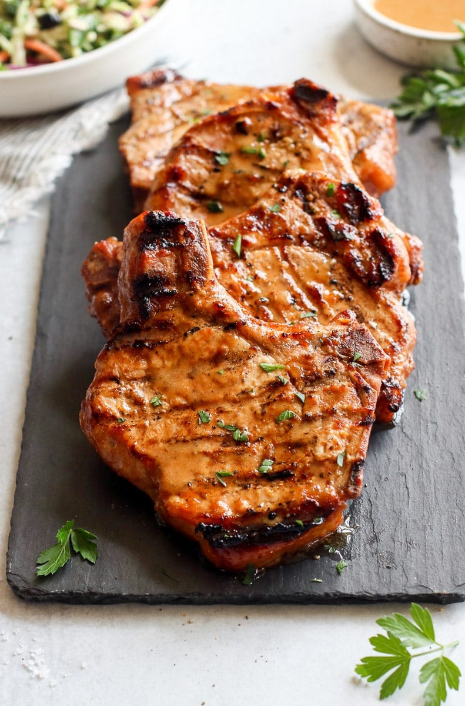

Ingredients
- Olive oil – can substitute avocado oil
- Coconut aminos – or you can use ¼ cup of low-sodium soy sauce, shoyu, or tamari (gluten-free) mixed with ¼ cup of water; for gluten-free, sodium sensitivity, or Whole30, we do recommend using coconut aminos, however, since it is lower in sodium and made from just two ingredients
- Honey or Deglet Dates – you can use either honey or fresh dates as the ingredient that gives this marinade just the right amount of sweetness. We found that the dates just made for nicer grill marks and a little desirable char on the pork chops, and they also make this marinade recipe Whole30-friendly. We suggest Deglet dates instead of Medjool dates since Deglet dates are a little less sweet, but either will work.
- Apple cider vinegar – or you can use red wine vinegar or white wine vinegar
- Dijon mustard – or use any type of mustard, including stone-ground mustard, spicy brown mustard, or yellow mustard
- Garlic – can sub 1 teaspoon garlic powder
- Ground cumin – or use ground coriander, paprika, or curry powder
- Black Pepper
- Fine Salt
Directions
- If you’re using dates, soak the dates in a bowl of warm water for 15 minutes.
- In a food processor combine the drained dates, oil, coconut aminos, vinegar, mustard, garlic, and spices. Blend until smooth.
- If you’re using honey instead of dates, you can skip the food processor step and just mix all of the pork chop marinade ingredients together in a bowl.